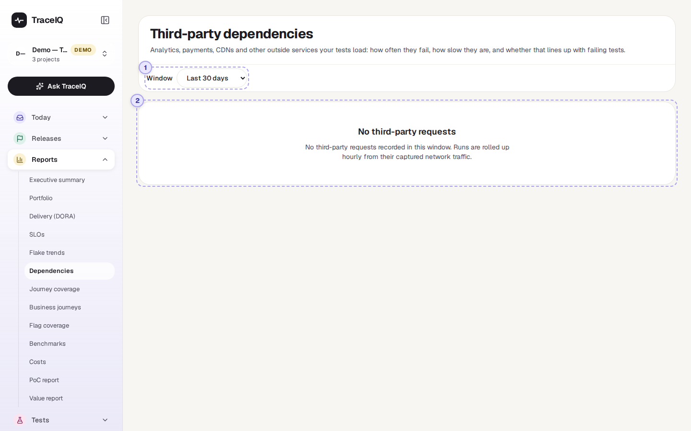
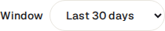

Dependencies
Your app probably loads things from other companies' servers: analytics, payments, fonts, maps, a content delivery network. This page lists those outside services, as seen during your test runs, with how often they returned errors, how slow they were, and whether their errors happen more often when tests fail.
What it is for
This page answers "Is it us, or is it them?" When tests fail, the cause is sometimes not your app at all but a service it depends on, such as a payment provider having a bad day. TraceIQ already records the requests the browser makes during each run, so it can tell you which outside services were involved and how they behaved.
Testers
Check whether a failing test lines up with errors from an outside service before reporting a bug in your own app.
Developers
See which outside services your pages load, and which of them are slow.
Leads and architects
Know which vendors you depend on, and how reliable they have been.
Where to find it: in the sidebar, open Reports → Dependencies. The page's own heading says Third-party dependencies.
A tour of the screen
The page shows the project selected at the top of the sidebar. The demo projects only call their own sites, so the screenshot shows what the page looks like before there is anything to list. When there is data describes the full page.

Window

How many days to cover: the last 7, 30 (chosen first), 90 or 180 days, counted in whole calendar days (UTC) up to and including today.
No third-party requests
This box means no run in the window loaded anything from an outside service, or the runs haven't been added up yet. It is normal for an API-only project, or a site that serves everything itself. Runs are added up once an hour, so a run that just finished can take up to an hour to appear.
When there is data
The line under the heading then says how many outside services were seen, how many returned errors, and when the figures were last added up. Below it, the page splits in two: a list on the left, details on the right.
The list of services
Services are in two groups, Returned errors first, then No errors; within each, the services with the most errors (then the most requests) come first. Each row shows the service's name, its number of requests and its p95 speed (see below), with its error rate on the right. Click a row to show it on the right; until you do, the first one is shown.
A service is a web domain, such as stripe.com.
Well-known ones get a readable name ("Stripe", "Google Analytics", "jsDelivr CDN"…);
others are shown by their domain.
The selected service
| Part | What it shows |
|---|---|
| Requests | How many responses the browser got from this service, and in how many runs. |
| Error rate | The share of those responses that were errors (an HTTP status of 400 or more, or no status at all), with the number of errors and of runs that had at least one. |
| Latency p50 / p95 | How long its responses took. p50: half were quicker than this; p95: 95% were. These are approximate: TraceIQ sorts times into ranges (up to 25 ms, up to 50 ms, … up to 30 s) and shows the top of the range. |
| Errors per day | A small line of the number of errors each day in the window. |
| Does it line up with failing tests? | Two bars: of the failed test results, the share whose run saw an error from this service; and the same for passed results. Then one sentence:
|
| Hosts seen | The exact server names used under that domain, for example js.stripe.com and api.stripe.com (up to 20). |
At the bottom, How this is built repeats the rules in short (see Good to know).
Watch it in use
How to…
…check whether an outside service broke your tests
- Choose a window that covers the failures, for example Last 7 days.
- Look at the Returned errors group and click the service at the top.
- Read Does it line up with failing tests? "Worth a look" means its errors came with failing tests much more often than with passing ones.
- Check Errors per day: errors on the same days as the failures make the link stronger.
…find the slowest outside services
- Read the p95 figure in each row of the list.
- Click a slow one and compare Latency p50 and p95: a big gap means it is usually quick but sometimes very slow.
Good to know
- What counts as outside. A request is to an outside service when its domain is different from your app's own: the site of the first page each test opened, the address a run was pointed at, and the environment's base address.
cdn.example.comandwww.example.comare the same domain, so they count as your own. - Only answered requests. Requests that got no response at all (for example blocked or timed out in the browser) are not in the figures.
- Only server names are kept, never the rest of the address (paths or anything after a
?), so nothing private from the requests is stored here. - Which runs count. Finished runs (passed, failed or error). The check runs TraceIQ makes for a suggested fix (see Proposals) are left out.
- Updated hourly. Each hour TraceIQ adds up today and yesterday again. Figures are kept for 180 days.
- A link is not proof. "Worth a look" says errors and failures happened in the same runs; it doesn't say which caused which. Open a failing run and look at its network requests to be sure.
Related pages
Journey coverage
The next page in this guide: how much of your real visitors' traffic your tests cover.
Runs
A run's own page, with the network requests it recorded, for the details behind these figures.
Failure triage
Failures grouped by cause; a Network group often points at an outside service.
Script inventory
The scripts your pages load from other sites, from a security point of view.